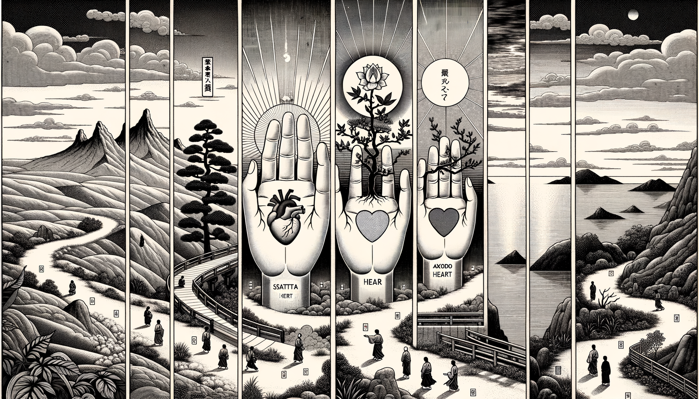

十二巻 巻一覧
正法眼藏第4 發菩提心
本ページは tools/gen_web_volumes.py が doc/正法眼蔵.txt から冒頭を抜粋して生成しています。図・詳細解説は今後の手編集で拡張できます。
出典（原文）: https://shomonji.or.jp/zazen/doc/genzou.html
（ローカル生成の全文: 全文ページ）
この巻の位置づけ（学習メモ）
道元『正法眼蔵』十二巻の第4篇「發菩提心」です。禅籍・経典への引用や語の行間が重なりやすいので、一度ですべてを要約に還元しない読み方を推奨します。問答 Bot では巻スコープにこの題名を含めると応答が安定しやすいことがあります。
語彙の足場
- 題名語：巻題「發菩提心」は、道元が本章で特に扱う論点の看板です。辞書義だけに固定せず、本文中の用例で意味を確かめます。
- 引用と典故：公案・経文の引用は、一字一句の照応（何に答えているか）を押さえると全体が見えやすくなります。
- 学び方：冒頭だけでも音読し、分からない箇所は印を付けて後から問うとよいです。
本文（冒頭・自動抜粋）
出典はリポジトリ内 doc/正法眼蔵.txt です。原文の参照元: https://shomonji.or.jp/zazen/doc/genzou.html
おほよそ、心三種あり。
一者質多心、此方稱慮知心（一つには質多心、此の方に慮知心と稱ず）。
二者汗栗多心、此方稱草木心（二つには汗栗多心、此の方に草木心と稱ず）。
三者矣栗多心、此方稱積聚精要心（三つには矣栗多心、此の方に積聚精要心と稱ず）。
このなかに、菩提心をおこすこと、かならず慮知心をもちゐる。菩提は天竺の音、ここには道といふ。質多は天竺の音、ここには慮知心といふ。この慮知心にあらざれば、菩提心をおこすことあたはず。この慮知をすなはち菩提心とするにはあらず、この慮知心をもて菩提心をおこすなり。菩提心をおこすといふは、おのれいまだわたらざるさきに、一切衆生をわたさんと發願しいとなむなり。そのかたちいやしといふとも、この心をおこせば、すでに、一切衆生の導師なり。
この心もとよりあるにあらず、いまあらたに歘起するにあらず。一にあらず、多にあらず。自然にあらず、凝然にあらず。わが身のなかにあるにあらず、わが身は心のなかにあるにあらず。この心は、法界に周遍せるにあらず。前にあらず、後にあらず。なきにあらず。自性にあらず、他性にあらず。共性にあらず、無因性にあらず。しかあれども、感應道交するところに、發菩提心するなり。諸佛菩薩の所授にあらず、みづからが所能にあらず、感應道交するに發心するゆゑに、自然にあらず。
この發菩提心、おほくは南閻浮の人身に發心すべきなり。八難處等にもすこしきはあり、おほからず。菩提心をおこしてのち、三阿僧祇劫、一百大劫修行す。あるいは無量劫おこなひてほとけになる。あるいは無量劫おこなひて、衆生をさきにわたして、みづからはつひにほとけにならず、ただし衆生をわたし、衆生を利益するもあり。菩薩の意樂にしたがふ。
おほよそ菩提心は、いかがして一切衆生をして菩提心をおこさしめ、佛道に引導せましと、ひまなく三業にいとなむなり。いたづらに世間の欲樂をあたふるを、利益衆生とするにはあらず。この發心、この修證、はるかに迷悟の邊表を超越せり。三界に勝出し、一切に拔群せり。なほ聲聞辟支佛のおよぶところにあらず。
迦葉菩薩、偈をもて釋迦牟尼佛をほめたてまつるにいはく、
發心畢竟二無別（發心と畢竟と二、別無し）、
如是二心先心難（是の如くの二心は先の心難し）。
自未得度先度他（自れ未だ度ることを得ざるに先づ他を度す）、
是故我禮初發心（是の故に我れは初發心を禮す）。
初發已爲天人師（初發已に天人師たり）、
勝出聲聞及緣覺（聲聞及び緣覺に勝出す）。
如是發心過三界（是の如くの發心は三界に過えたり）、
是故得名最無上（是の故に最無上と名づくることを得）。
發心とは、はじめて自未得度先度他の心をおこすなり、これを初發菩提心といふ。この心をおこすよりのち、さらにそこばくの諸佛にあふたてまつり、供養したてまつるに、見佛聞法し、さらに菩提心をおこす、霜上加霜なり。
いはゆる畢竟とは、佛果菩提なり。阿耨多羅三藐三菩提と初發菩提心と、格量せば劫火、螢火のごとくなるべしといへども、自未得度先度他のこころをおこせば、二無別なり。
毎自作是念（毎に自ら是の念を作さく）、
以何令衆生（何を以てか衆生をして）。
得入無上道（無上道に入り）、
速成就佛身（速やかに佛身を成就することを得しめん）。
これすなはち如來の壽量なり。ほとけは發心、修行、證果、みなかくのごとし。
衆生を利益すといふは、衆生をして自未得度先度他のこころをおこさしむるなり。自未得度先度他の心をおこせるちからによりて、われほとけにならんとおもふべからず。たとひほとけになるべき功徳熟して圓滿すべしといふとも、なほめぐらして衆生の成佛得道に囘向するなり。この心、われにあらず、他にあらず、きたるにあらずといへども、この發心よりのち、大地を擧すればみな黄金となり、大海をかけばたちまちに甘露となる。これよりのち、土石砂礫をとる、すなはち菩提心を拈來するなり。水沫泡焰を參ずる、したしく菩提心を擔來するなり。
しかあればすなはち、國城妻子、七寶男女、頭目髓腦、身肉手足をほどこす、みな菩提心の鬧聒聒なり、菩提心の活鱍鱍なり、いまの質多、慮知の心、ちかきにあらず、とほきにあらず、みづからにあらず、他にあらずといへども、この心をもて、自未得度先度他の道理にめぐらすこと不退轉なれば、發菩提心なり。
しかあれば、いま一切衆生の我有と執せる草木瓦礫、金銀珍寶をもて菩提心にほどこす、また發菩提心ならざらめやは。心および諸法、ともに自他共無因にあらざるがゆゑに、もし一刹那この菩提心をおこすより、萬法みな増上緣となる。おほよそ發心、得道、みな刹那生滅するによるものなり。もし刹那生滅せずは、前刹那の惡さるべからず。前刹那の惡いまださらざれば、後刹那の善いま現生すべからず。この刹那の量は、ただ如來ひとりあきらかにしらせたまふ。一刹那心、能起一語、一刹那語、能説一字（一刹那の心、能く一語を起し、一刹那の語、能く一字を説く）も、ひとり如來のみなり。餘聖不能なり。
おほよそ壯士の一彈指のあひだに、六十五の刹那ありて五蘊生滅すれども、凡夫かつて不覺不知なり。怛刹那の量よりは、凡夫もこれをしれり。一日一夜をふるあひだに、六十四億九万九千九百八十の刹那ありて、五蘊ともに生滅す。しかあれども、凡夫かつて覺知せず。覺知せざるがゆゑに菩提心をおこさず。佛法をしらず、佛法を信ぜざるものは、刹那生滅の道理を信ぜざるなり。もし如來の正法眼藏涅槃妙心をあきらむるがごときは、かならずこの刹那生滅の道理を信ずるなり。いまわれら如來の説教にあふたてまつりて、曉了するににたれども、わづかに怛刹那よりこれをしり、その道理しかあるべしと信受するのみなり。世尊所説の一切の法、あきらめずしらざることも、刹那量をしらざるがごとし。學者みだりに貢高することなかれ。極少をしらざるのみにあらず、極大をもまたしらざるなり。もし如來の道力によるときは、衆生また三千界をみる。おほよそ本有より中有にいたり、中有より當本有にいたる、みな一刹那一刹那にうつりゆくなり。かくのごとくして、わがこころにあらず、業にひかれて流轉生死すること、一刹那もとどまらざるなり。かくのごとく流轉生死する身心をもて、たちまちに自未得度先度他の菩提心をおこすべきなり。たとひ發菩提心のみちに身心ををしむとも、生老病死して、つひに我有なるべからず。
衆生の壽行生滅してとどまらず、すみやかなること、
世尊在世有一比丘、來詣佛所、頂禮雙足、却住一面、白世尊言、衆生壽行、云何速疾生滅（世尊在世に一比丘有り、佛の所に來詣りて、雙足を頂禮し、却つて一面に住して、世尊に白して言さく、衆生の壽行、云何が速疾に生滅する）。
佛言、我能宣説、汝不能知（我れ能く宣説するも、汝知ること能はじ）。
比丘言、頗有譬喩能顯示不（頗る譬喩の能く顯示しつべき有りや不や）。
佛言、有、今爲汝説。譬如四善射夫、各執弓箭、相背攅立、欲射四方、有一捷夫、來語之、曰汝等今可一時放箭、我能遍接、倶令不墮。於意云何、此捷疾不（佛言く、有り、今汝が爲に説かん。譬へば四の善射夫、各弓箭を執り、相背きて攅り立ちて、四方を射んと欲んに、一の捷夫有りて、來りて之に語げて、汝等今一時に箭を放つべし、我れ能く遍く接りて、倶に墮せざらしめんと曰はんが如し。意に於て云何、此れは捷疾なりや不や）。
比丘白佛、其疾、世尊（比丘、佛に白さく、其だ疾し、世尊）。
佛言、彼人捷疾、不及地行夜叉。地行夜叉捷疾、不及空行夜叉。空行夜叉捷疾、不及四天王天捷疾。彼天捷疾、不及日月二輪捷疾。日月二輪捷疾、不及堅行天子捷疾。此是導引日月輪車者。此等諸天、展轉捷疾。壽行生滅、捷疾於彼。刹那流轉、無有暫停（佛言く、彼の人の捷疾なること、地行夜叉に及ばず。地行夜叉の捷疾なること、空行夜叉に及ばず。空行夜叉の捷疾なること、四天王天の捷疾なるに及ばず。彼の天の捷疾なること、日月二輪の捷疾なるに及ばず。日月二輪の捷疾なること、堅行天子の捷疾なるに及ばず。此れは是れ日月の輪車を導引する者なり。此等の諸天、展轉して捷疾なり。壽行の生滅は、彼よりも捷疾なり。刹那に流轉し、暫くも停ること有ること無し）。
われらが壽行生滅、刹那流轉捷疾なること、かくのごとし。念念のあひだ、行者この道理をわするることなかれ。この刹那生滅、流轉捷疾にありながら、もし自未得度先度他の一念をおこすごときは、久遠の壽量、たちまちに現在前するなり。三世十方の諸佛、ならびに七佛世尊、および西天二十八祖、東地六祖、乃至傳佛正法眼藏涅槃妙心の祖師、みなともに菩提心を保任せり、いまだ菩提心をおこさざるは祖師にあらず。
禪苑淸規一百二十問云、發悟菩提心否（菩提心を發悟せりや否や）。
あきらかにしるべし、佛祖の學道、かならず菩提心を發悟するをさきとせりといふこと。これすなはち佛祖の常法なり。發悟すといふは、曉了なり。これ大覺にはあらず。たとひ十地を頓證せるも、なほこれ菩薩なり。西天二十八祖、唐土六祖等、および諸大祖師は、これ菩薩なり。ほとけにあらず、聲聞辟支佛等にあらず。いまのよにある參學のともがら、菩薩なり、聲聞にあらずといふこと、あきらめしれるともがら一人もなし。ただみだりに衲僧、衲子と自稱して、その眞實をしらざるによりて、みだりがはしくせり。あはれむべし、澆季祖道癈せること。
しかあればすなはち、たとひ在家にもあれ、たとひ出家にもあれ、あるいは天上にもあれ、あるいは人間にもあれ、苦にありといふとも、樂にありといふとも、はやく自未得度先度他の心をおこすべし。衆生界は有邊無邊にあらざれども、先度一切衆生の心をおこすなり。これすなはち菩提心なり。
一生補處菩薩、まさに閻浮提にくだらんとするとき、覩史多天の諸天のために、最後の教をほどこすにいはく、菩提心是法明門、不斷三寶故（菩提心は是れ法明門なり、三寶を斷ぜざるが故に）。
あきらかにしりぬ、三寶の不斷は菩提心のちからなりといふことを。菩提心をおこしてのち、かたく守護し、退轉なかるべし。
佛言、云何菩薩守護一事。謂、菩提心。菩薩摩訶薩、常勤守護是菩提心、猶如世人守護一子。亦如瞎者護餘一目。如行曠野守護導者。菩薩守護菩提心、亦復如是。因護如是菩提心故、得阿耨多羅三藐三菩提。因得阿耨多羅三藐三菩提故、常樂我淨具足而有。卽是無上大般涅槃。是故菩薩守護一法（佛言はく、云何が菩薩一事を守護せん。謂く、菩提心なり。菩薩摩訶薩、常に勤めて是の菩提心を守護すること、猶ほ世人の一子を守護するが如し。亦た瞎者の餘の一目を護るが如し。曠野を行くに、導者を守護するが如し。菩薩の菩提心を守護することも、亦た復た是の如し。是の如くの菩提心を護るに因るが故に、阿耨多羅三藐三菩提を得。阿耨多羅三藐三菩提を得るに因るが故に、常樂我淨具足して有り。卽ち是れ無上大般涅槃なり。是の故に菩薩は一法を守護すべし）。
菩提心をまぼらんこと、佛語あきらかにかくのごとし。守護して退轉なからしむるゆゑは、世間の常法にいはく、たとひ生ずれども熟せざるもの三種あり。いはく、魚子、菴羅果、發心菩薩なり。おほよそ退大のものおほきがゆゑに、われも退大とならんことを、かねてよりおそるるなり。このゆゑに菩提心を守護するなり。
菩薩の初心のとき、菩提心を退轉すること、おほくは正師にあはざるによる。正師にあはざれば正法をきかず、正法をきかざればおそらくは因果を撥無し、解脱を撥無し、三寶を撥無し、三世等の諸法を撥無す。いたづらに現在の五欲に貪著して、前途菩提の功徳を失す。
あるいは天魔波旬等、行者をさまたげんがために、佛形に化し、父母師匠、乃至親族諸天等のかたちを現じて、きたりちかづきて、菩薩にむかひてこしらへすすめていはく、佛道長遠、久受諸苦、もともうれふべし。しかじ、まづわれ生死を解脱し、のちに衆生をわたさんには。行者このかたらひをききて、菩提心を退し、菩薩の行を退す。まさにしるべし、かくのごとくの説すなはちこれ魔説なり、菩薩しりてしたがふことなかれ。もはら自未得度先度他の行願を退轉せざるべし。自未得度先度他の行願にそむかんがごときは、これ魔説としるべし、外道説としるべし、惡友説としるべし。さらにしたがふことなかれ。
魔有四種。一煩惱魔、二五衆魔、三死魔、四天子魔（魔に四種有り。一には煩惱魔、二には五衆魔、三には死魔、四には天子魔）。
煩惱魔者、所謂百八煩惱等、分別八萬四千諸煩惱（煩惱魔とは、所謂る百八煩惱等、分別するに八萬四千の諸の煩惱なり）。
五衆魔者、是煩惱和合因緣、得是身。四大及四大造色、眼根等色、是名色衆。百八煩惱等諸受和合、名爲受衆。大小無量所有想、分別和合、名爲想衆。因好醜心發、能起貪欲瞋恚等心、相應不相應法、名爲行衆。六情六塵和合故生六識、是六識分別和合無量無邊心、是名識衆（五衆魔とは、是れ煩惱和合の因緣にして、是の身を得。四大及び四大の造色、眼根等の色、是れを色衆と名づく。百八煩惱等の諸受和合せるを、名づけて受衆と爲す。大小無量の所有の想、分別和合せるを、名づけて想衆と爲す。好醜の心發るに因つて、能く貪欲瞋恚等の心、相應不相應の法を起すを、名づけて行衆と爲す。六情六塵和合するが故に六識を生ず、是の六識分別和合すれば無量無邊の心あり、是れを識衆と名づく）。
死魔者、無常因緣故、破相續五衆壽命、盡離三法識熱壽故、名爲死魔（死魔とは、無常因緣の故に、相續せる五衆の壽命を破り、三法なる識熱壽を盡離するが故に、名づけて死魔と爲す）。
天子魔者、欲界主、深著世樂、用有所得故生邪見、憎嫉一切賢聖、涅槃道法。是名天子魔（天子魔とは、欲界の主として、深く世樂に著し、有所得を用ての故に邪見を生じ、一切賢聖、涅槃の道法を憎嫉す。是れを天子魔と名づく）。
魔是天竺語、秦言能奪命者。雖死魔實能奪命、餘者亦能作奪命因緣、亦奪智惠命。是故名殺者（魔は是れ天竺の語、秦には能奪命者と言ふ。死魔は實に能く命を奪ふと雖も、餘の者も亦た能く奪命の因緣を作し、亦た智惠の命を奪ふ。是の故に殺者と名づく）。
問曰、一五衆魔接三種魔、何以故別説四（一の五衆魔に三種の魔を接す、何を以ての故に別にして四と説くや）。
答曰、實是一魔、分別其義故有四（實に是れ一魔なり、其の義を分別するが故に四有り）。
上來これ龍樹祖師の施設なり、行者しりて勤學すべし。いたづらに魔嬈をかうぶりて、菩提心を退轉せざれ、これ守護菩提心なり。
正法眼藏發菩提心第四
建長七年乙卯四月九日以御草案書寫之 懷弉
図解（4コマ・AI生成）
教義の根拠は本文・出典に従い、漫画は比喩の補助に留めてください。

深掘り（読解のコツ）
- 道元文は定義の羅列に見えても、多くの場合誤解への遮断と正伝の姿勢が背骨になっています。
- 「当体」「現成」「即」などの語が出たら、その巻独自の差別相にどう接続しているかをメモしておくとよいです。